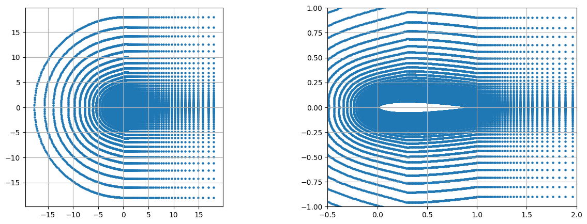
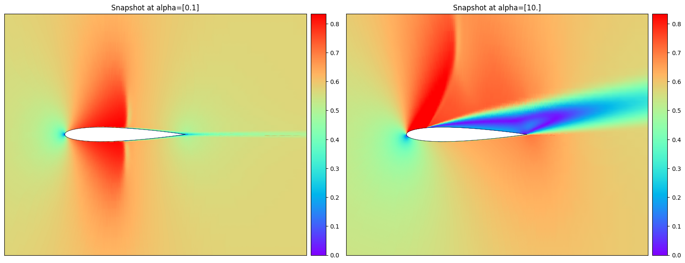
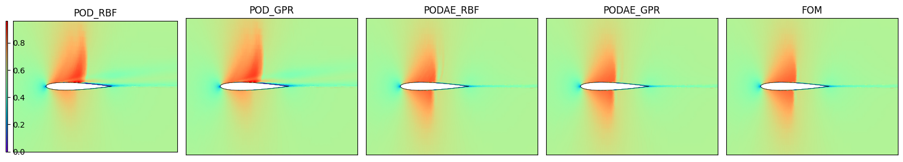
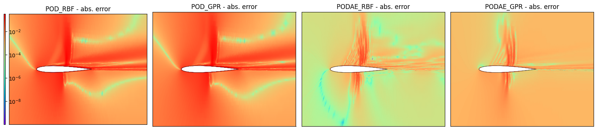
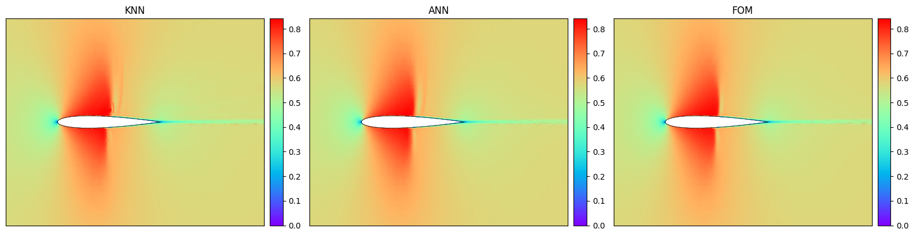
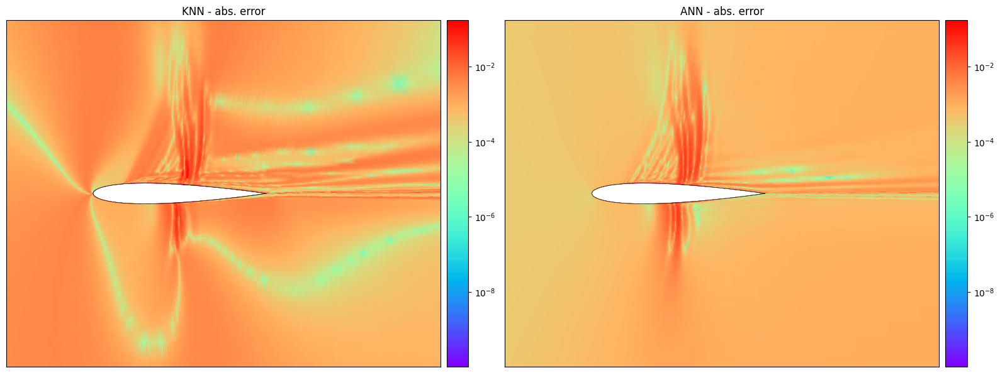
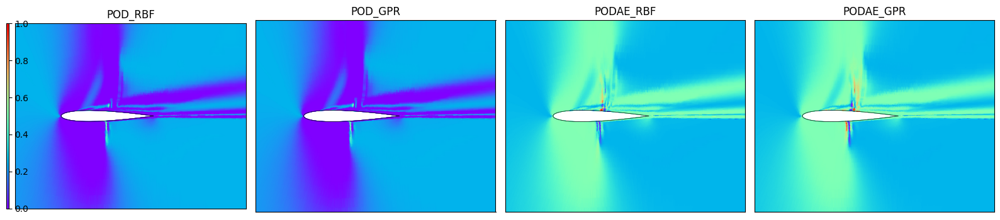
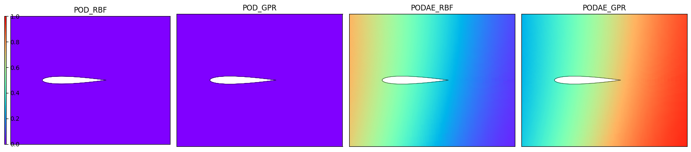

<!DOCTYPE html>
<html class="writer-html5" lang="en" data-content_root="../../">
<head>
  <meta charset="utf-8" /><meta name="viewport" content="width=device-width, initial-scale=1" />

  <meta name="viewport" content="width=device-width, initial-scale=1.0" />
  <title>Build a Multi Reduced Order Model (MultiROM) &mdash; ezyrb 1.3.3 documentation</title>
      <link rel="stylesheet" type="text/css" href="../../_static/pygments.css?v=fa44fd50" />
      <link rel="stylesheet" type="text/css" href="../../_static/css/theme.css?v=e59714d7" />
      <link rel="stylesheet" type="text/css" href="../../_static/graphviz.css?v=4ae1632d" />

  
      <script src="../../_static/jquery.js?v=5d32c60e"></script>
      <script src="../../_static/_sphinx_javascript_frameworks_compat.js?v=2cd50e6c"></script>
      <script src="../../_static/documentation_options.js?v=28d163b9"></script>
      <script src="../../_static/doctools.js?v=9bcbadda"></script>
      <script src="../../_static/sphinx_highlight.js?v=dc90522c"></script>
      <script async="async" src="https://cdn.jsdelivr.net/npm/mathjax@3/es5/tex-mml-chtml.js"></script>
    <script src="../../_static/js/theme.js"></script>
    <link rel="index" title="Index" href="../../genindex.html" />
    <link rel="search" title="Search" href="../../search.html" />
    <link rel="next" title="How to contribute" href="../../contributing.html" />
    <link rel="prev" title="Using Plugin for implementing NNsPOD-ROM" href="../tutorial-3/tutorial-3.html" /> 
</head>

<body class="wy-body-for-nav"> 
  <div class="wy-grid-for-nav">
    <nav data-toggle="wy-nav-shift" class="wy-nav-side">
      <div class="wy-side-scroll">
        <div class="wy-side-nav-search" >

          
          
          <a href="../../index.html" class="icon icon-home">
            ezyrb
          </a>
<div role="search">
  <form id="rtd-search-form" class="wy-form" action="../../search.html" method="get">
    <input type="text" name="q" placeholder="Search docs" aria-label="Search docs" />
    <input type="hidden" name="check_keywords" value="yes" />
    <input type="hidden" name="area" value="default" />
  </form>
</div>
        </div><div class="wy-menu wy-menu-vertical" data-spy="affix" role="navigation" aria-label="Navigation menu">
              <p class="caption" role="heading"><span class="caption-text">User Guide</span></p>
<ul class="current">
<li class="toctree-l1"><a class="reference internal" href="../../installation.html">Installation</a></li>
<li class="toctree-l1"><a class="reference internal" href="../../quickstart.html">Quick Start</a></li>
<li class="toctree-l1"><a class="reference internal" href="../../code.html">API Documentation</a></li>
<li class="toctree-l1 current"><a class="reference internal" href="../../tutorials.html">Tutorials</a><ul class="current">
<li class="toctree-l2"><a class="reference internal" href="../tutorial-1/tutorial-1.html">Build and query a simple reduced order model</a></li>
<li class="toctree-l2"><a class="reference internal" href="../tutorial-2/tutorial-2.html">Test several frameworks at once</a></li>
<li class="toctree-l2"><a class="reference internal" href="../tutorial-3/tutorial-3.html">Using Plugin for implementing NNsPOD-ROM</a></li>
<li class="toctree-l2 current"><a class="current reference internal" href="#">Build a Multi Reduced Order Model (MultiROM)</a><ul>
<li class="toctree-l3"><a class="reference internal" href="#whats-next">What’s next?</a></li>
</ul>
</li>
</ul>
</li>
</ul>
<p class="caption" role="heading"><span class="caption-text">Developer Info</span></p>
<ul>
<li class="toctree-l1"><a class="reference internal" href="../../contributing.html">How to contribute</a></li>
<li class="toctree-l1"><a class="reference internal" href="../../contact.html">Contact</a></li>
<li class="toctree-l1"><a class="reference internal" href="../../LICENSE.html">License</a></li>
</ul>

        </div>
      </div>
    </nav>

    <section data-toggle="wy-nav-shift" class="wy-nav-content-wrap"><nav class="wy-nav-top" aria-label="Mobile navigation menu" >
          <i data-toggle="wy-nav-top" class="fa fa-bars"></i>
          <a href="../../index.html">ezyrb</a>
      </nav>

      <div class="wy-nav-content">
        <div class="rst-content">
          <div role="navigation" aria-label="Page navigation">
  <ul class="wy-breadcrumbs">
      <li><a href="../../index.html" class="icon icon-home" aria-label="Home"></a></li>
          <li class="breadcrumb-item"><a href="../../tutorials.html">Tutorials</a></li>
      <li class="breadcrumb-item active">Build a Multi Reduced Order Model (MultiROM)</li>
      <li class="wy-breadcrumbs-aside">
            <a href="../../_sources/_tutorials/tutorial-4/tutorial-4.rst.txt" rel="nofollow"> View page source</a>
      </li>
  </ul>
  <hr/>
</div>
          <div role="main" class="document" itemscope="itemscope" itemtype="http://schema.org/Article">
           <div itemprop="articleBody">
             
  <section id="build-a-multi-reduced-order-model-multirom">
<h1>Build a Multi Reduced Order Model (MultiROM)<a class="headerlink" href="#build-a-multi-reduced-order-model-multirom" title="Link to this heading"></a></h1>
<p>In this tutorial, we will show how to aggregate the predictions of
different ROMs following the method presented in the <a class="reference external" href="https://link.springer.com/content/pdf/10.1007/s00707-024-04007-9.pdf">paper by Ivagnes
et
al.</a></p>
<p>Let’s call <span class="math notranslate nohighlight">\(\boldsymbol{\eta}=(\boldsymbol{x}, \boldsymbol{\mu})\)</span>
the problem’s features, namely the space coordinates and the parameters.</p>
<p>The idea is to build and combine a set of ROMs
<span class="math notranslate nohighlight">\(\{\mathcal{M}_1, \mathcal{M}_2, \dots, \mathcal{M}_{N}\}\)</span>, to
approximate a specific high-fidelity field, for instance the
parametrized velocity <span class="math notranslate nohighlight">\(\boldsymbol{u}(\boldsymbol{\eta})\)</span>. The
individual ROMs differ in the reduction approach and/or in the
approximation technique. The <strong>MultiROM prediction</strong> will then be a
convex combination of the predictions of the pre-trained individual
ROMs. If the <span class="math notranslate nohighlight">\(i\)</span>-th ROM prediction is
<span class="math notranslate nohighlight">\(\tilde{\boldsymbol{u}}^{(i)}(\boldsymbol{\eta})\)</span>, then the
MultiROM prediction will be:</p>
<div class="math notranslate nohighlight">
\[\tilde{\boldsymbol{u}}(\boldsymbol{\eta}) = \sum_{i=1}^{N} w^{(i)}(\boldsymbol{\eta}) \tilde{\boldsymbol{u}}^{(i)}(\boldsymbol{\eta}) ,\]</div>
<p>where the weights associated with each ROM in the convex combination are
space- and parameter-dependent. In this way, the <strong>MultiROM</strong> should
effectively and automatically identify the ROM with the optimal
performance across various regions of the spatial and parameter domains.</p>
<p>To build the model, we have to design a method to compute the weights,
also in unseen settings. We here consider a dataset from the library
<strong>Smithers</strong> (<code class="docutils literal notranslate"><span class="pre">NavierStokesDataset</span></code>), and we divide it into three
subsets: - the <strong>training</strong> dataset (composed of
<span class="math notranslate nohighlight">\(M_{\text{train}}\)</span> instances): used to train the individual ROMs;
- the <strong>evaluation</strong> dataset (composed of <span class="math notranslate nohighlight">\(M_{\text{evaluation}}\)</span>
instances): used to compute the optimal weights; - the <strong>test</strong> dataset
(composed of <span class="math notranslate nohighlight">\(M_{\text{test}}\)</span> instances): used to test our
methodology, where the weights are approximated with a regression
technique.</p>
<p>Now the question is: <em>How to compute the weights?</em> We here consider two
different approaches: - <strong>XMA</strong> (as in <a class="reference external" href="https://www.sciencedirect.com/science/article/abs/pii/S0021999123007234">de Zordo-Banliat et
al.</a>),
where the weights are computed in the evaluation set, using the
following expression:</p>
<div class="math notranslate nohighlight">
\[w^{(i)}(\boldsymbol{\eta})=\dfrac{g^{(i)}(\boldsymbol{\eta})}{\sum_{i=1}^N g^{(i)}(\boldsymbol{\eta})}, \, g^{(i)}(\boldsymbol{\eta})=\text{exp}\left( - \dfrac{1}{2} \dfrac{(\tilde{\boldsymbol{u}}^{(i)}(\boldsymbol{\eta}) - \boldsymbol{u}(\boldsymbol{\eta}))^2}{\sigma^2} \right),\, \text{for } \boldsymbol{\eta}=\boldsymbol{\eta}_{\text{evaluation}}.\]</div>
<p>In the test set, a regression approach (<code class="docutils literal notranslate"><span class="pre">KNN</span></code>) is used to
approximate the weights at unseen
<span class="math notranslate nohighlight">\(\boldsymbol{\eta}=\boldsymbol{\eta}_{\text{test}}\)</span>.</p>
<ul>
<li><p><strong>ANN</strong>: a neural network takes as input <span class="math notranslate nohighlight">\(\boldsymbol{\eta}\)</span>,
and gives as output directly the weights
<span class="math notranslate nohighlight">\(w^{(i)}, i=1, \dots, N,\)</span> of the convex combination. It is
trained to minimize the following loss:</p>
<div class="math notranslate nohighlight">
\[\mathcal{L}=\frac{1}{M_{\textrm{test}}} \sum_{j=1}^{M_{\textrm{test}}}\left(\sum_{i=1}^N \left(w^{(i)}(\boldsymbol{\eta}_j) \tilde{\boldsymbol{u}}^{(i)}(\boldsymbol{\eta}_j)\right) - \boldsymbol{u}(\boldsymbol{\eta}_j) \right)^2\]</div>
</li>
</ul>
<p>Let’s begin the tutorial with some useful imports.</p>
<div class="highlight-ipython3 notranslate"><div class="highlight"><pre><span></span>import numpy as np
import copy
%pip install -e ../
from ezyrb import Database
from ezyrb import POD, AE, PODAE
from ezyrb import RBF, GPR, ANN, KNeighborsRegressor
from ezyrb import ReducedOrderModel as ROM
from ezyrb import MultiReducedOrderModel as MultiROM
from ezyrb.plugin import Aggregation, DatabaseSplitter
import matplotlib.pyplot as plt
import torch
import torch.nn as nn
from matplotlib.colors import LogNorm
import matplotlib.tri as tri
import matplotlib
from mpl_toolkits.axes_grid1 import make_axes_locatable
</pre></div>
</div>
<div class="highlight-default notranslate"><div class="highlight"><pre><span></span>Obtaining file:///Users/aivagnes/Desktop/Work/Packages/EZyRB
  Preparing metadata (setup.py) ... [?25ldone
[?25hRequirement already satisfied: future in /Library/Frameworks/Python.framework/Versions/3.8/lib/python3.8/site-packages (from ezyrb==1.3.0) (0.18.3)
Requirement already satisfied: numpy in /Library/Frameworks/Python.framework/Versions/3.8/lib/python3.8/site-packages (from ezyrb==1.3.0) (1.24.4)
Requirement already satisfied: scipy in /Library/Frameworks/Python.framework/Versions/3.8/lib/python3.8/site-packages (from ezyrb==1.3.0) (1.10.1)
Requirement already satisfied: matplotlib in /Library/Frameworks/Python.framework/Versions/3.8/lib/python3.8/site-packages (from ezyrb==1.3.0) (3.7.1)
Requirement already satisfied: scikit-learn&gt;=1.0 in /Library/Frameworks/Python.framework/Versions/3.8/lib/python3.8/site-packages (from ezyrb==1.3.0) (1.3.2)
Requirement already satisfied: torch in /Library/Frameworks/Python.framework/Versions/3.8/lib/python3.8/site-packages (from ezyrb==1.3.0) (2.0.1)
Requirement already satisfied: joblib&gt;=1.1.1 in /Library/Frameworks/Python.framework/Versions/3.8/lib/python3.8/site-packages (from scikit-learn&gt;=1.0-&gt;ezyrb==1.3.0) (1.2.0)
Requirement already satisfied: threadpoolctl&gt;=2.0.0 in /Library/Frameworks/Python.framework/Versions/3.8/lib/python3.8/site-packages (from scikit-learn&gt;=1.0-&gt;ezyrb==1.3.0) (3.1.0)
Requirement already satisfied: contourpy&gt;=1.0.1 in /Library/Frameworks/Python.framework/Versions/3.8/lib/python3.8/site-packages (from matplotlib-&gt;ezyrb==1.3.0) (1.0.7)
Requirement already satisfied: cycler&gt;=0.10 in /Library/Frameworks/Python.framework/Versions/3.8/lib/python3.8/site-packages (from matplotlib-&gt;ezyrb==1.3.0) (0.11.0)
Requirement already satisfied: fonttools&gt;=4.22.0 in /Library/Frameworks/Python.framework/Versions/3.8/lib/python3.8/site-packages (from matplotlib-&gt;ezyrb==1.3.0) (4.39.0)
Requirement already satisfied: kiwisolver&gt;=1.0.1 in /Library/Frameworks/Python.framework/Versions/3.8/lib/python3.8/site-packages (from matplotlib-&gt;ezyrb==1.3.0) (1.4.4)
Requirement already satisfied: packaging&gt;=20.0 in /Library/Frameworks/Python.framework/Versions/3.8/lib/python3.8/site-packages (from matplotlib-&gt;ezyrb==1.3.0) (23.0)
Requirement already satisfied: pillow&gt;=6.2.0 in /Library/Frameworks/Python.framework/Versions/3.8/lib/python3.8/site-packages (from matplotlib-&gt;ezyrb==1.3.0) (9.4.0)
Requirement already satisfied: pyparsing&gt;=2.3.1 in /Library/Frameworks/Python.framework/Versions/3.8/lib/python3.8/site-packages (from matplotlib-&gt;ezyrb==1.3.0) (3.0.9)
Requirement already satisfied: python-dateutil&gt;=2.7 in /Library/Frameworks/Python.framework/Versions/3.8/lib/python3.8/site-packages (from matplotlib-&gt;ezyrb==1.3.0) (2.8.2)
Requirement already satisfied: importlib-resources&gt;=3.2.0 in /Library/Frameworks/Python.framework/Versions/3.8/lib/python3.8/site-packages (from matplotlib-&gt;ezyrb==1.3.0) (5.12.0)
Requirement already satisfied: filelock in /Library/Frameworks/Python.framework/Versions/3.8/lib/python3.8/site-packages (from torch-&gt;ezyrb==1.3.0) (3.15.4)
Requirement already satisfied: typing-extensions in /Library/Frameworks/Python.framework/Versions/3.8/lib/python3.8/site-packages (from torch-&gt;ezyrb==1.3.0) (4.11.0)
Requirement already satisfied: sympy in /Library/Frameworks/Python.framework/Versions/3.8/lib/python3.8/site-packages (from torch-&gt;ezyrb==1.3.0) (1.11.1)
Requirement already satisfied: networkx in /Library/Frameworks/Python.framework/Versions/3.8/lib/python3.8/site-packages (from torch-&gt;ezyrb==1.3.0) (3.1)
Requirement already satisfied: jinja2 in /Library/Frameworks/Python.framework/Versions/3.8/lib/python3.8/site-packages (from torch-&gt;ezyrb==1.3.0) (3.1.2)
Requirement already satisfied: zipp&gt;=3.1.0 in /Library/Frameworks/Python.framework/Versions/3.8/lib/python3.8/site-packages (from importlib-resources&gt;=3.2.0-&gt;matplotlib-&gt;ezyrb==1.3.0) (3.15.0)
Requirement already satisfied: six&gt;=1.5 in /Library/Frameworks/Python.framework/Versions/3.8/lib/python3.8/site-packages (from python-dateutil&gt;=2.7-&gt;matplotlib-&gt;ezyrb==1.3.0) (1.16.0)
Requirement already satisfied: MarkupSafe&gt;=2.0 in /Library/Frameworks/Python.framework/Versions/3.8/lib/python3.8/site-packages (from jinja2-&gt;torch-&gt;ezyrb==1.3.0) (2.1.2)
Requirement already satisfied: mpmath&gt;=0.19 in /Library/Frameworks/Python.framework/Versions/3.8/lib/python3.8/site-packages (from sympy-&gt;torch-&gt;ezyrb==1.3.0) (1.3.0)
Installing collected packages: ezyrb
  Attempting uninstall: ezyrb
    Found existing installation: ezyrb 1.3.0
    Uninstalling ezyrb-1.3.0:
      Successfully uninstalled ezyrb-1.3.0
  Running setup.py develop for ezyrb
Successfully installed ezyrb-1.3.0

[notice] A new release of pip is available: 24.1.1 -&gt; 25.0.1
[notice] To update, run: pip install --upgrade pip
Note: you may need to restart the kernel to use updated packages.
</pre></div>
</div>
<p>Before starting with the core part of the tutorial, we define a useful
function for plotting the solutions on a 2D mesh.</p>
<div class="highlight-ipython3 notranslate"><div class="highlight"><pre><span></span>def plot_multiple_internal(db, fields_list, titles_list, figsize=None,
                           logscale=False, lim_x=(-0.5, 2), lim_y=(-1, 1),
                           different_cbar=True, clims=None):
    &#39;&#39;&#39;
    Plot multiple internal fields in one figure.

    Parameters
    ----------
    db : PinaDataModule
        The data module.
    fields_list : list
        The list of fields to plot.
    titles_list : list
        The list of titles for each field.
    figsize : tuple (optional, default=(16, 16/len(fields_list))
        The size of the figure.
    logscale : bool (optional, default=False)
        Whether to use a logarithmic color scale.
    lim_x : tuple (optional, default=(-0.5, 2))
        The x-axis limits.
    lim_y : tuple (optional, default=(-1, 1))
        The y-axis limits.
    different_cbar : bool (optional, default=True)
        Whether to use a different colorbar for each field.

    Returns
    ----------
    None (shows figures)
    &#39;&#39;&#39;
    triang = db.auxiliary_triang

    if figsize is None:
        figsize = (16, 16/len(fields_list))
    fig, axs = plt.subplots(1, len(fields_list), figsize=figsize)
    for e, a in enumerate(axs):
        field = fields_list[e]
        title = titles_list[e]
        if clims is None:
            clims = fields_list[0].min(), fields_list[0].max()
        if logscale:
            lognorm = matplotlib.colors.LogNorm(vmin=clims[0]+1e-12,
                vmax=clims[1])
            c = a.tripcolor(triang, field, cmap=&#39;rainbow&#39;,
                shading=&#39;gouraud&#39;, norm=lognorm)
        else:
            c = a.tripcolor(triang, field, cmap=&#39;rainbow&#39;,
                shading=&#39;gouraud&#39;, vmin=clims[0],
                vmax=clims[1])
        a.plot(db._coords_airfoil()[0], db._coords_airfoil()[1],
            color=&#39;black&#39;, lw=0.5)
        a.plot(db._coords_airfoil(which=&#39;neg&#39;)[0],
            db._coords_airfoil(which=&#39;neg&#39;)[1],
            color=&#39;black&#39;, lw=0.5)
        a.set_aspect(&#39;equal&#39;)
        if lim_x is not None:
            a.set_xlim(lim_x)
        if lim_y is not None:
            a.set_ylim(lim_y)
        if title is not None:
            a.set_title(title)
        if different_cbar:
            divider = make_axes_locatable(a)
            cax = divider.append_axes(&quot;right&quot;, size= &quot;5%&quot;, pad=0.1)
            plt.colorbar(c, cax=cax)
        a.set_xticks([])
        a.set_yticks([])
    if not different_cbar:
        divider = make_axes_locatable(axs[0])
        cax = divider.append_axes(&quot;left&quot;, size= &quot;1%&quot;, pad=0.1)
        plt.colorbar(c, cax=cax)
    plt.tight_layout()
    plt.show()
</pre></div>
</div>
<p>Now, we define a simple neural network class, which will be useful in
the multiROM-ANN case. This networks takes as input the spatial
coordinates and the problem parameters, and gives as output the weights
of our multiROM. This class is inherited from the <code class="docutils literal notranslate"><span class="pre">ANN</span></code> one, with a
newly defined <code class="docutils literal notranslate"><span class="pre">fit</span></code> function. In this case, in the loss function we
have the discrepancy between the multiROM prediction and the FOM
reference. Moreover, the power of this technique is that it is
continuous in space, so we can train the NN on a reduced amount of
spatial data, gaining time also in the training itself.</p>
<div class="highlight-ipython3 notranslate"><div class="highlight"><pre><span></span>class ANN_weights(ANN):
    def __init__(self, mrom, layers, function, stop_training, loss=None,
                 optimizer=torch.optim.Adam, lr=0.001, l2_regularization=0,
                 frequency_print=500, last_identity=True):
        super().__init__(layers, function, stop_training, loss=None,
                 optimizer=torch.optim.Adam, lr=0.001, l2_regularization=0,
                 frequency_print=10, last_identity=True)

        # import useful data from multirom and roms predictions
        self.mrom = mrom
        self.params = list(self.mrom.roms.values())[0].validation_full_database.parameters_matrix

        self.frequency_print = frequency_print
        self.lr = lr
        self.l2_regularization = l2_regularization

        # import ROMs and validation predictions of all ROMs
        self.rom_validation_predictions = {}
        for rom in self.mrom.roms:
            rom_pred = self.mrom.roms[rom]
            rom_pred = rom_pred.predict(self.params)
            rom_pred = rom_pred.reshape(rom_pred.shape[0]*rom_pred.shape[1], 1)
            self.rom_validation_predictions[rom] = self._convert_numpy_to_torch(rom_pred)

        # Device configuration
        self.device = torch.device(&#39;mps&#39; if torch.backends.mps.is_available() else &#39;cpu&#39;)
        print(f&quot;Using device: 💻 {self.device}&quot;)

    def _build_model_(self, points):
        layers = self.layers.copy()
        layers.insert(0, points.shape[1])
        layers.append(len(self.mrom.roms))
        self.model = self._list_to_sequential(layers, self.function)

        # Move the model to the device
        self.model.to(self.device)

    def fit(self, points, values): # points=(x, mu) and values=(snapshots)
        self._build_model_(points)
        optimizer = self.optimizer(
            self.model.parameters(),
            lr=self.lr, weight_decay=self.l2_regularization)

        #scheduler = torch.optim.lr_scheduler.ReduceLROnPlateau(optimizer, mode=&#39;min&#39;, factor=0.9, patience=1000)

        points = self._convert_numpy_to_torch(points)
        values = self._convert_numpy_to_torch(values)

        # Move everything to the device
        points = points.to(self.device)
        values = values.to(self.device)
        self.rom_validation_predictions = {rom: pred.to(self.device) for rom, pred in self.rom_validation_predictions.items()}

        # train the neural network
        n_epoch = 1
        flag = True
        while flag:
            # compute output of ANN
            y_pred = self.model(points)

            # compute aggregated solution from output weights of ANN
            aggr_pred = torch.zeros(values.shape, device=self.device)
            for i, rom in enumerate(self.mrom.roms):
                weight = y_pred.clone()[..., i].unsqueeze(-1)
                aggr_pred += weight*self.rom_validation_predictions[rom]

            # difference between aggregated solution and exact solution
            loss = self.loss(aggr_pred, values)

            optimizer.zero_grad()
            loss.backward()
            optimizer.step()

            scalar_loss = loss.item()
            self.loss_trend.append(scalar_loss)

            #scheduler.step(scalar_loss)

            for criteria in self.stop_training:
                if isinstance(criteria, int):  # stop criteria is an integer
                    if n_epoch == criteria:
                        flag = False
                elif isinstance(criteria, float):  # stop criteria is float
                    if scalar_loss &lt; criteria:
                        flag = False

            if (flag is False or
                    n_epoch == 1 or n_epoch % self.frequency_print == 0):
                print(f&#39;[epoch {n_epoch:6d}]\t{scalar_loss:e}&#39;)
            n_epoch += 1

        return optimizer

    def predict(self, x):

        # Move the model to the device
        x = self._convert_numpy_to_torch(np.array(x))
        x = x.to(self.device)
        y_new = self.model(x)
        ynew = y_new.cpu().detach().numpy()
        return ynew
</pre></div>
</div>
<p>Now we can introduce the dataset, taken from the library
<a class="reference external" href="https://github.com/mathLab/Smithers">Smithers</a>.</p>
<p>The test case here considered is <code class="docutils literal notranslate"><span class="pre">AirfoilTransonicDataset</span></code>, namely the
transonic flow over an airfoil (NACA 0012), with the angle of attack
varying in the range [<span class="math notranslate nohighlight">\(0^{\circ}\)</span>, <span class="math notranslate nohighlight">\(10^{\circ}\)</span>] at the
Reynolds number <span class="math notranslate nohighlight">\(Re=10^7\)</span>.</p>
<p>This test case is quite challenging, as it presents shocks, and the
shock position varies a lot from one snapshot to the other. The full
order implementation has been done in OpenFOAM (using a finite volume
discretization) and has been validated with the results in
<a class="reference external" href="https://ntrs.nasa.gov/citations/19850019511">https://ntrs.nasa.gov/citations/19850019511</a> and in
<a class="reference external" href="https://doi.org/10.2514/1.J051329">https://doi.org/10.2514/1.J051329</a>.</p>
<p>The <code class="docutils literal notranslate"><span class="pre">AirfoilTransonicDataset</span></code> is a dictionary including:</p>
<ul class="simple">
<li><p><code class="docutils literal notranslate"><span class="pre">pts_coordinates</span></code>: the points’ coordinates, divided into:</p>
<ul>
<li><p><code class="docutils literal notranslate"><span class="pre">pts_coordinates['internal']</span></code>: x-y coordinates in internal mesh;</p></li>
<li><p><code class="docutils literal notranslate"><span class="pre">pts_coordinates['airfoil']</span></code>: x-y coordinates on the airfoil;</p></li>
</ul>
</li>
<li><p><code class="docutils literal notranslate"><span class="pre">params</span></code>: the parameters, in our case only the angle of attack;</p></li>
<li><p><code class="docutils literal notranslate"><span class="pre">snapshots</span></code>: the snapshots’ fields, divided into:</p>
<ul>
<li><p><code class="docutils literal notranslate"><span class="pre">snapshots['internal']</span></code>: the fields evaluated on the 2D internal
mesh (we will focus on the velocity magnitude <code class="docutils literal notranslate"><span class="pre">mag(v)</span></code>);</p></li>
<li><p><code class="docutils literal notranslate"><span class="pre">snapshots['airfoil']</span></code>: the fields on the airfoil (1D fields).</p></li>
</ul>
</li>
</ul>
<p>We focus here on the 2D <code class="docutils literal notranslate"><span class="pre">mag(v)</span></code> field. Let’s try to read the dataset!</p>
<div class="highlight-ipython3 notranslate"><div class="highlight"><pre><span></span>from smithers.dataset import NavierStokesDataset, AirfoilTransonicDataset
data = AirfoilTransonicDataset()
field = &#39;mag(v)&#39;
coords = data.pts_coordinates[&quot;internal&quot;].T
params = data.params
snaps = data.snapshots[&quot;internal&quot;][field]
snaps_max = np.max(snaps)
snaps /= snaps_max
print(&quot;Shape of parameters vector: &quot;, params.shape)
print(&quot;Shape of snapshots matrix: &quot;, snaps.shape)
</pre></div>
</div>
<div class="highlight-default notranslate"><div class="highlight"><pre><span></span><span class="n">Shape</span> <span class="n">of</span> <span class="n">parameters</span> <span class="n">vector</span><span class="p">:</span>  <span class="p">(</span><span class="mi">100</span><span class="p">,</span> <span class="mi">1</span><span class="p">)</span>
<span class="n">Shape</span> <span class="n">of</span> <span class="n">snapshots</span> <span class="n">matrix</span><span class="p">:</span>  <span class="p">(</span><span class="mi">100</span><span class="p">,</span> <span class="mi">45448</span><span class="p">)</span>
</pre></div>
</div>
<p>Let’s try now to visualize the 2D spatial coordinates and the velocity
magnitude snapshots for the two extreme parameters.</p>
<div class="highlight-ipython3 notranslate"><div class="highlight"><pre><span></span>idx = 0
# Plot coordinates
fig, ax = plt.subplots(1, 2, figsize=(15, 5))
ax[0].scatter(data.pts_coordinates[&quot;internal&quot;][0, :],
            data.pts_coordinates[&quot;internal&quot;][1, :], s=5)
ax[1].scatter(data.pts_coordinates[&quot;internal&quot;][0, :],
            data.pts_coordinates[&quot;internal&quot;][1, :], s=5)
ax[1].set_xlim(-0.5, 2)
ax[1].set_ylim(-1, 1)

for a in ax:
  a.grid()
  a.set_aspect(&quot;equal&quot;)
plt.show()
plot_multiple_internal(data, [snaps[0], snaps[-1]], [f&quot;Snapshot at alpha={params[0]}&quot;, f&quot;Snapshot at alpha={params[-1]}&quot;],
                      figsize=None, logscale=False, lim_x=(-0.5, 2), lim_y=(-1, 1), different_cbar=True)
</pre></div>
</div>


<p>Then, we can create the database for the ROMs and initialize the
reduction and approximation approaches. Here, we decide to consider POD
and PODAE as reduction techniques, RBF and GPR as approximation
strategies. In the end, we are considering four ROMs: POD-RBF, POD-GPR,
PODAE-RBF, PODAE-GPR.</p>
<div class="highlight-ipython3 notranslate"><div class="highlight"><pre><span></span># Create the database
db_all = Database(params, snaps, coords)

# Define some reduction and approximation methods to test
rank = 3
pod_for_podae = POD(&#39;svd&#39;, rank=80)
ae_for_podae = AE([30, 10, rank], [rank, 10, 30], nn.Softplus(), nn.Softplus(), 50000, lr=1e-3, frequency_print=2000)
reduction_methods = {
    &#39;POD&#39;: POD(&#39;svd&#39;, rank=rank),
    &#39;PODAE&#39;: PODAE(pod_for_podae, ae_for_podae)
}
approximation_methods = {
    &#39;RBF&#39;: RBF(),
    &#39;GPR&#39;: GPR()
}
</pre></div>
</div>
<p>We now define the ROMs (store into a simple dictionary). Note that we
use the <code class="docutils literal notranslate"><span class="pre">DatabaseSplitter</span></code> plugin to split our database into train,
validation, test, and predict sets. Here we will only use the train,
validation, and predict sets.</p>
<div class="highlight-ipython3 notranslate"><div class="highlight"><pre><span></span># Define a dictionary to store the ROMs
roms_dict = {}
db_splitter_plugin = DatabaseSplitter(train=0.6, validation=0.3, test=0.,
                                            predict=0.1, seed=42)
# Train a ROM for each combination of reduction and approximation
for redname, redclass in reduction_methods.items():
    for approxname, approxclass in approximation_methods.items():
        rom = ROM(copy.deepcopy(db_all),
                  copy.deepcopy(redclass),
                  copy.deepcopy(approxclass),
                  plugins=[db_splitter_plugin])
        roms_dict[f&#39;{redname}_{approxname}&#39;] = rom
</pre></div>
</div>
<p>Then, the definition of the <code class="docutils literal notranslate"><span class="pre">MultiROM</span></code> follows. We can now fit the
MultiROM, which coincides with fitting the individual ROMs separately.</p>
<div class="highlight-ipython3 notranslate"><div class="highlight"><pre><span></span># Build a simple multiROM without aggregation and save it
multirom_noagg = MultiROM(roms_dict)
# Fit the multiROM (this step may take some time)
multirom_noagg.fit()
</pre></div>
</div>
<div class="highlight-default notranslate"><div class="highlight"><pre><span></span><span class="p">[</span><span class="n">epoch</span>      <span class="mi">1</span><span class="p">]</span>      <span class="mf">2.469141e+02</span>
<span class="p">[</span><span class="n">epoch</span>   <span class="mi">2000</span><span class="p">]</span>      <span class="mf">1.377898e-01</span>
<span class="p">[</span><span class="n">epoch</span>   <span class="mi">4000</span><span class="p">]</span>      <span class="mf">1.071991e-01</span>
<span class="p">[</span><span class="n">epoch</span>   <span class="mi">6000</span><span class="p">]</span>      <span class="mf">7.265408e-02</span>
<span class="p">[</span><span class="n">epoch</span>   <span class="mi">8000</span><span class="p">]</span>      <span class="mf">4.396581e-02</span>
<span class="p">[</span><span class="n">epoch</span>  <span class="mi">10000</span><span class="p">]</span>      <span class="mf">3.937927e-02</span>
<span class="p">[</span><span class="n">epoch</span>  <span class="mi">12000</span><span class="p">]</span>      <span class="mf">3.674430e-02</span>
<span class="p">[</span><span class="n">epoch</span>  <span class="mi">14000</span><span class="p">]</span>      <span class="mf">4.076399e-02</span>
<span class="p">[</span><span class="n">epoch</span>  <span class="mi">16000</span><span class="p">]</span>      <span class="mf">2.940542e-02</span>
<span class="p">[</span><span class="n">epoch</span>  <span class="mi">18000</span><span class="p">]</span>      <span class="mf">2.764397e-02</span>
<span class="p">[</span><span class="n">epoch</span>  <span class="mi">20000</span><span class="p">]</span>      <span class="mf">2.988867e-02</span>
<span class="p">[</span><span class="n">epoch</span>  <span class="mi">22000</span><span class="p">]</span>      <span class="mf">2.159446e-02</span>
<span class="p">[</span><span class="n">epoch</span>  <span class="mi">24000</span><span class="p">]</span>      <span class="mf">2.006776e-02</span>
<span class="p">[</span><span class="n">epoch</span>  <span class="mi">26000</span><span class="p">]</span>      <span class="mf">1.967250e-02</span>
<span class="p">[</span><span class="n">epoch</span>  <span class="mi">28000</span><span class="p">]</span>      <span class="mf">1.194988e-02</span>
<span class="p">[</span><span class="n">epoch</span>  <span class="mi">30000</span><span class="p">]</span>      <span class="mf">9.829493e-03</span>
<span class="p">[</span><span class="n">epoch</span>  <span class="mi">32000</span><span class="p">]</span>      <span class="mf">9.823296e-03</span>
<span class="p">[</span><span class="n">epoch</span>  <span class="mi">34000</span><span class="p">]</span>      <span class="mf">8.634089e-03</span>
<span class="p">[</span><span class="n">epoch</span>  <span class="mi">36000</span><span class="p">]</span>      <span class="mf">8.533438e-03</span>
<span class="p">[</span><span class="n">epoch</span>  <span class="mi">38000</span><span class="p">]</span>      <span class="mf">8.409876e-03</span>
<span class="p">[</span><span class="n">epoch</span>  <span class="mi">40000</span><span class="p">]</span>      <span class="mf">1.002743e-02</span>
<span class="p">[</span><span class="n">epoch</span>  <span class="mi">42000</span><span class="p">]</span>      <span class="mf">1.035028e-02</span>
<span class="p">[</span><span class="n">epoch</span>  <span class="mi">44000</span><span class="p">]</span>      <span class="mf">8.028184e-03</span>
<span class="p">[</span><span class="n">epoch</span>  <span class="mi">46000</span><span class="p">]</span>      <span class="mf">8.383193e-03</span>
<span class="p">[</span><span class="n">epoch</span>  <span class="mi">48000</span><span class="p">]</span>      <span class="mf">7.963227e-03</span>
<span class="p">[</span><span class="n">epoch</span>  <span class="mi">50000</span><span class="p">]</span>      <span class="mf">1.061061e-02</span>
<span class="p">[</span><span class="n">epoch</span>      <span class="mi">1</span><span class="p">]</span>      <span class="mf">2.433394e+02</span>
<span class="p">[</span><span class="n">epoch</span>   <span class="mi">2000</span><span class="p">]</span>      <span class="mf">2.430486e-01</span>
<span class="p">[</span><span class="n">epoch</span>   <span class="mi">4000</span><span class="p">]</span>      <span class="mf">8.800354e-02</span>
<span class="p">[</span><span class="n">epoch</span>   <span class="mi">6000</span><span class="p">]</span>      <span class="mf">6.279282e-02</span>
<span class="p">[</span><span class="n">epoch</span>   <span class="mi">8000</span><span class="p">]</span>      <span class="mf">4.753726e-02</span>
<span class="p">[</span><span class="n">epoch</span>  <span class="mi">10000</span><span class="p">]</span>      <span class="mf">4.444053e-02</span>
<span class="p">[</span><span class="n">epoch</span>  <span class="mi">12000</span><span class="p">]</span>      <span class="mf">4.448576e-02</span>
<span class="p">[</span><span class="n">epoch</span>  <span class="mi">14000</span><span class="p">]</span>      <span class="mf">4.391388e-02</span>
<span class="p">[</span><span class="n">epoch</span>  <span class="mi">16000</span><span class="p">]</span>      <span class="mf">4.341885e-02</span>
<span class="p">[</span><span class="n">epoch</span>  <span class="mi">18000</span><span class="p">]</span>      <span class="mf">3.927369e-02</span>
<span class="p">[</span><span class="n">epoch</span>  <span class="mi">20000</span><span class="p">]</span>      <span class="mf">3.098299e-02</span>
<span class="p">[</span><span class="n">epoch</span>  <span class="mi">22000</span><span class="p">]</span>      <span class="mf">2.612145e-02</span>
<span class="p">[</span><span class="n">epoch</span>  <span class="mi">24000</span><span class="p">]</span>      <span class="mf">2.182353e-02</span>
<span class="p">[</span><span class="n">epoch</span>  <span class="mi">26000</span><span class="p">]</span>      <span class="mf">2.140819e-02</span>
<span class="p">[</span><span class="n">epoch</span>  <span class="mi">28000</span><span class="p">]</span>      <span class="mf">2.090856e-02</span>
<span class="p">[</span><span class="n">epoch</span>  <span class="mi">30000</span><span class="p">]</span>      <span class="mf">2.038679e-02</span>
<span class="p">[</span><span class="n">epoch</span>  <span class="mi">32000</span><span class="p">]</span>      <span class="mf">1.961394e-02</span>
<span class="p">[</span><span class="n">epoch</span>  <span class="mi">34000</span><span class="p">]</span>      <span class="mf">1.646917e-02</span>
<span class="p">[</span><span class="n">epoch</span>  <span class="mi">36000</span><span class="p">]</span>      <span class="mf">1.557970e-02</span>
<span class="p">[</span><span class="n">epoch</span>  <span class="mi">38000</span><span class="p">]</span>      <span class="mf">1.507105e-02</span>
<span class="p">[</span><span class="n">epoch</span>  <span class="mi">40000</span><span class="p">]</span>      <span class="mf">1.453493e-02</span>
<span class="p">[</span><span class="n">epoch</span>  <span class="mi">42000</span><span class="p">]</span>      <span class="mf">1.511188e-02</span>
<span class="p">[</span><span class="n">epoch</span>  <span class="mi">44000</span><span class="p">]</span>      <span class="mf">1.419082e-02</span>
<span class="p">[</span><span class="n">epoch</span>  <span class="mi">46000</span><span class="p">]</span>      <span class="mf">1.334900e-02</span>
<span class="p">[</span><span class="n">epoch</span>  <span class="mi">48000</span><span class="p">]</span>      <span class="mf">1.282931e-02</span>
<span class="p">[</span><span class="n">epoch</span>  <span class="mi">50000</span><span class="p">]</span>      <span class="mf">1.201333e-02</span>
</pre></div>
</div>
<div class="highlight-default notranslate"><div class="highlight"><pre><span></span><span class="o">&lt;</span><span class="n">ezyrb</span><span class="o">.</span><span class="n">reducedordermodel</span><span class="o">.</span><span class="n">MultiReducedOrderModel</span> <span class="n">at</span> <span class="mh">0x30cc6edc0</span><span class="o">&gt;</span>
</pre></div>
</div>
<p>After fitting the individual models in the train database, we can now
read the validation and test databases, and, for example, visualize the
ROM predictions for some test parameters.</p>
<div class="highlight-ipython3 notranslate"><div class="highlight"><pre><span></span># Get the dictionary of ROMs
roms_dict = multirom_noagg.roms

# Extract one ROM from the dictionary, and read the validation and test databases
rom_one = list(multirom_noagg.roms.values())[0]
db_validation = rom_one.validation_full_database
db_test = rom_one.predict_full_database
</pre></div>
</div>
<div class="highlight-ipython3 notranslate"><div class="highlight"><pre><span></span># Visualize the results of each ROM in the multiROM without aggregation on
# a new parameter
j = 0 # we choose an index to plot the solution and the weights
p = db_test.parameters_matrix[j]
print(&quot;Test parameter for plotting: &quot;, p)
fields = []
roms_pred = [rom.predict([p]).flatten() for rom in roms_dict.values()]
roms_pred.append(db_test.snapshots_matrix[j])
errs = [np.abs(r - db_test.snapshots_matrix[j])+1e-10 for r in roms_pred[:-1]]
labels = [f&#39;{key}&#39; for key in roms_dict.keys()]
labels.append(&quot;FOM&quot;)
plot_multiple_internal(data, roms_pred, labels, different_cbar=False)
plot_multiple_internal(data, errs, [f&quot;{l} - abs. error&quot; for l in labels], logscale=True, different_cbar=False)
</pre></div>
</div>
<div class="highlight-default notranslate"><div class="highlight"><pre><span></span><span class="n">Test</span> <span class="n">parameter</span> <span class="k">for</span> <span class="n">plotting</span><span class="p">:</span>  <span class="p">[</span><span class="mf">0.2</span><span class="p">]</span>
</pre></div>
</div>


<p>We can see that the <code class="docutils literal notranslate"><span class="pre">POD_*</span></code> solutions are more overdiffusive, while
the <code class="docutils literal notranslate"><span class="pre">PODAE_*</span></code> solutions better capture the discontinuity, even if they
still exhibit imprecisions.</p>
<p>We now initialize two novel <code class="docutils literal notranslate"><span class="pre">multiROM</span></code>s using the plugin
<code class="docutils literal notranslate"><span class="pre">Aggregation</span></code>. One model is for the standard XMA aggregation
(indicated with <code class="docutils literal notranslate"><span class="pre">fit_function=None</span></code>) and uses <code class="docutils literal notranslate"><span class="pre">KNN</span></code> as regressor.
The other model uses the <code class="docutils literal notranslate"><span class="pre">ANN_weights</span></code> class to compute the weights
starting from the individual ROM prediction. In both cases, the weights
are trained in the validation set.</p>
<div class="highlight-ipython3 notranslate"><div class="highlight"><pre><span></span>print(&quot;Fitting multiROM with KNN aggregation...&quot;)
knn = KNeighborsRegressor()
multirom_KNN = MultiROM(roms_dict, plugins=[Aggregation(fit_function=None, predict_function=knn), db_splitter_plugin])
multirom_KNN.fit()
</pre></div>
</div>
<div class="highlight-default notranslate"><div class="highlight"><pre><span></span><span class="n">Fitting</span> <span class="n">multiROM</span> <span class="k">with</span> <span class="n">KNN</span> <span class="n">aggregation</span><span class="o">...</span>
<span class="n">Optimal</span> <span class="n">sigma</span> <span class="n">value</span> <span class="ow">in</span> <span class="n">weights</span><span class="p">:</span>  <span class="p">[</span><span class="mf">0.009994</span><span class="p">]</span>
</pre></div>
</div>
<div class="highlight-default notranslate"><div class="highlight"><pre><span></span><span class="o">&lt;</span><span class="n">ezyrb</span><span class="o">.</span><span class="n">reducedordermodel</span><span class="o">.</span><span class="n">MultiReducedOrderModel</span> <span class="n">at</span> <span class="mh">0x30fd2f310</span><span class="o">&gt;</span>
</pre></div>
</div>
<div class="highlight-ipython3 notranslate"><div class="highlight"><pre><span></span>print(&quot;Fitting multiROM with ANN aggregation...&quot;)
ann = ANN_weights(multirom_noagg, [64, 64, 64],[nn.Softplus(), nn.Softplus(), nn.Softplus(), nn.Softmax(dim=-1)],
                    stop_training=1000, lr=1e-3, frequency_print=100, l2_regularization=0)
multirom_ANN = MultiROM(roms_dict, plugins=[Aggregation(fit_function=ann), db_splitter_plugin])
multirom_ANN.fit()
</pre></div>
</div>
<div class="highlight-default notranslate"><div class="highlight"><pre><span></span>Fitting multiROM with ANN aggregation...
Using device: 💻 mps
[epoch      1]      1.110127e-04
[epoch    100]      2.332629e-05
[epoch    200]      2.292044e-05
[epoch    300]      2.286620e-05
[epoch    400]      2.281346e-05
[epoch    500]      2.274650e-05
[epoch    600]      2.265942e-05
[epoch    700]      2.256762e-05
[epoch    800]      2.250623e-05
[epoch    900]      2.247204e-05
[epoch   1000]      2.244576e-05
</pre></div>
</div>
<div class="highlight-default notranslate"><div class="highlight"><pre><span></span><span class="o">&lt;</span><span class="n">ezyrb</span><span class="o">.</span><span class="n">reducedordermodel</span><span class="o">.</span><span class="n">MultiReducedOrderModel</span> <span class="n">at</span> <span class="mh">0x30fd2f7c0</span><span class="o">&gt;</span>
</pre></div>
</div>
<p>Let’s now quantify the relative error on test parameters for the
individual ROMs and for the multiROM strategies.</p>
<div class="highlight-ipython3 notranslate"><div class="highlight"><pre><span></span>multiroms = {}
multiroms[&quot;KNN&quot;] = multirom_KNN
multiroms[&quot;ANN&quot;] = multirom_ANN

header = &#39;{:10s}&#39;.format(&#39;&#39;)
for name in approximation_methods:
    header += &#39; {:&gt;16s}&#39;.format(name)
print(header)
for redname, redclass in reduction_methods.items():
    row = &#39;{:10s}&#39;.format(redname)
    for approxname, approxclass in approximation_methods.items():
        rom = roms_dict[redname+&#39;_&#39;+approxname]
        row += &#39; {:16e}&#39;.format(rom.test_error(db_test))
    print(row)
    print(&#39;-&#39;*len(row))
for model_name in multiroms:
    row = &#39;{:10s}&#39;.format(model_name)
    multirom_ = multiroms[model_name]
    row += &#39;- MultiROM {:16e}&#39;.format(multirom_.test_error(db_test))
    print(row)
</pre></div>
</div>
<div class="highlight-default notranslate"><div class="highlight"><pre><span></span>                        <span class="n">RBF</span>              <span class="n">GPR</span>
<span class="n">POD</span>            <span class="mf">5.263353e-02</span>     <span class="mf">5.263348e-02</span>
<span class="o">--------------------------------------------</span>
<span class="n">PODAE</span>          <span class="mf">9.785834e-03</span>     <span class="mf">9.695809e-03</span>
<span class="o">--------------------------------------------</span>
<span class="n">KNN</span>       <span class="o">-</span> <span class="n">MultiROM</span>     <span class="mf">1.304681e-02</span>
<span class="n">ANN</span>       <span class="o">-</span> <span class="n">MultiROM</span>     <span class="mf">9.233725e-03</span>
</pre></div>
</div>
<p>We can try now to visualize the predicted multiROMs solutions for a test
parameters, and the errors with respect to the corresponding FOM
reference. The multiROM automatically detects the best method in
different spatial coordinates.</p>
<div class="highlight-ipython3 notranslate"><div class="highlight"><pre><span></span>fields = []
roms_pred = []
for rom in multiroms.values():
    roms_pred.append(rom.predict(np.array([p]).reshape(-1, 1)).flatten())
roms_pred.append(db_test.snapshots_matrix[j].flatten())
errs = [np.abs(r - db_test.snapshots_matrix[j])+1e-10 for r in roms_pred[:-1]]
labels = list(multiroms.keys())
labels.append(&quot;FOM&quot;)
# visualize fields
plot_multiple_internal(data, roms_pred, labels,
            figsize=None, logscale=False, lim_x=(-0.5, 2), lim_y=(-1, 1))
# visualize errors in log scale
plot_multiple_internal(data, errs, [f&quot;{l} - abs. error&quot; for l in labels],
            figsize=None, logscale=True, lim_x=(-0.5, 2), lim_y=(-1, 1))
</pre></div>
</div>


<p>We finally try to visualize the weights, for example for the standard
XMA multiROM strategy, for the same test parameter as before.</p>
<div class="highlight-ipython3 notranslate"><div class="highlight"><pre><span></span>for mrom in multiroms.values():
    weights_list = []
    for rom in roms_dict.keys():
        weights_list.append(mrom.weights_predict[rom].flatten())
    plot_multiple_internal(data, weights_list, list(roms_dict.keys()),
        figsize=None, logscale=False, lim_x=(-0.5, 2), lim_y=(-1, 1), different_cbar=False, clims=[0, 1])
</pre></div>
</div>


<p>We can immediately see that the standard aggregation algorithm is
“activating” the nonlinear reduction approaches (PODAE) in the spatial
regions close to the shock and to the wake, while in the rest part of
the domain the weights are 50% for POD methods and 50% for PODAE
methods. The ANN strategy instead converges to weights with less
space-dependency. This highly depends on the architecture of the ANN,
and on all the hyperparameters (activation function, learning rate,
weight decay).</p>
<section id="whats-next">
<h2>What’s next?<a class="headerlink" href="#whats-next" title="Link to this heading"></a></h2>
<p>There’s still a lot to do like: - improving the training of the ANN by
adding a negative loss contribution depending on the spatial variability
of the weights. In this way we try to enforce more space variability; -
try to combine FOM and ROM together (multifidelity aggregation).</p>
</section>
</section>


           </div>
          </div>
          <footer><div class="rst-footer-buttons" role="navigation" aria-label="Footer">
        <a href="../tutorial-3/tutorial-3.html" class="btn btn-neutral float-left" title="Using Plugin for implementing NNsPOD-ROM" accesskey="p" rel="prev"><span class="fa fa-arrow-circle-left" aria-hidden="true"></span> Previous</a>
        <a href="../../contributing.html" class="btn btn-neutral float-right" title="How to contribute" accesskey="n" rel="next">Next <span class="fa fa-arrow-circle-right" aria-hidden="true"></span></a>
    </div>

  <hr/>

  <div role="contentinfo">
    <p>&#169; Copyright 2016-2025, EZyRB contributors.
      <span class="lastupdated">Last updated on Dec 22, 2025.
      </span></p>
  </div>

  Built with <a href="https://www.sphinx-doc.org/">Sphinx</a> using a
    <a href="https://github.com/readthedocs/sphinx_rtd_theme">theme</a>
    provided by <a href="https://readthedocs.org">Read the Docs</a>.
   

</footer>
        </div>
      </div>
    </section>
  </div>
  <script>
      jQuery(function () {
          SphinxRtdTheme.Navigation.enable(true);
      });
  </script> 

</body>
</html>